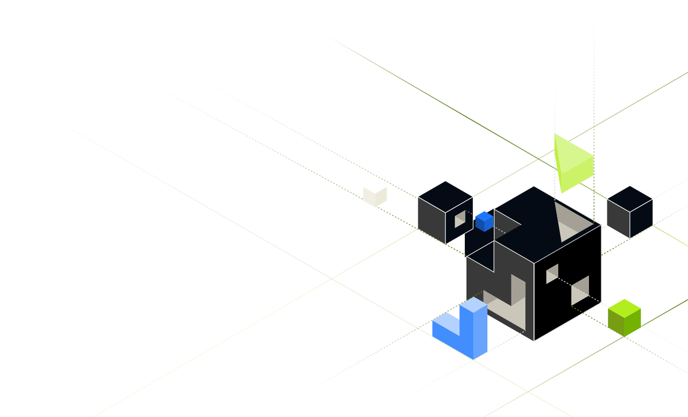

Technical Overview · 技术概览
2026-05-27 · 01 / 04
Unified Namespace · 统一命名空间
Tier0
工业数据
统一平台
在边缘实时连接、建模并编排 OT/IT 数据，让全厂共享同一套语义化事实源

Unified Namespace · 统一命名空间
在边缘实时连接、建模并编排 OT/IT 数据，让全厂共享同一套语义化事实源

Copyright © 2026 Tier0. All rights reserved.
Copyright © 2026 Tier0. All rights reserved.
统一协议适配层
ISA-95 主题树
亚 50ms 低延迟
规则 → 动作
端到端加密
标准集成接口
Copyright © 2026 Tier0. All rights reserved.
四步低风险推进 — 每步独立验证，先证明价值再复制
Discovery
现状梳理 · OT 资产普查 · 命名规范制定
PoC
单产线全链路验证 · 关键指标基准 · ≈ 4 周
Pilot Line
接入 MES / BI · 试运行 · 用户培训
Scale-out
多产线 / 多厂区 · 模板化复制 · 持续运营
平均交付周期
8 wk
PoC → Pilot 上线
接入协议数
30+
开箱即用驱动
ROI 回收
<12 mo
典型客户案例
Copyright © 2026 Tier0. All rights reserved.